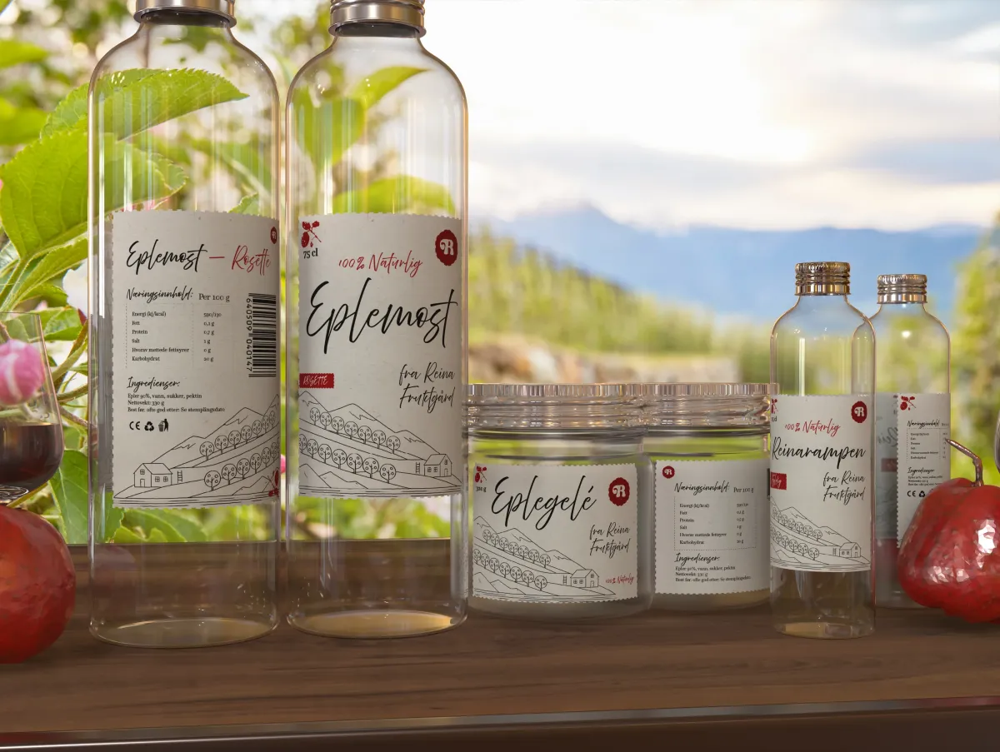
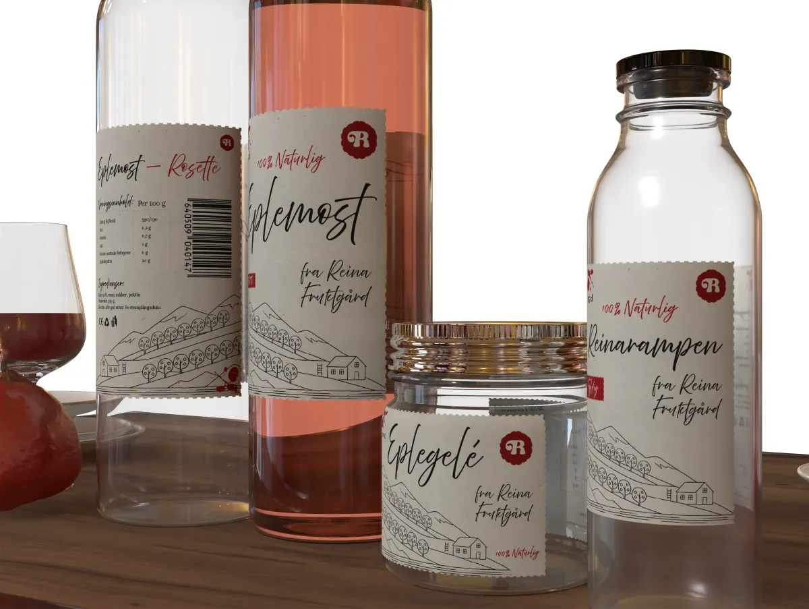

Reina Fruktgård
I dette prosjektet redesignet jeg emballasjen for Reina Fruktgård, en småskala økologisk produsent i Molde. Målet var å utvikle et helhetlig uttrykk som formidler opprinnelse, kvalitet og det lokale, autentiske preget.





Reina er en tradisjonsrik gård med røtter langs Fannefjorden. Den har tidligere drevet med melk og kjøtt, men ble i 2021 omstilt til økologisk frukt-dyrking. Den sørvendte beliggenheten gir ideelle klimaforhold for epleproduksjon. Navnet Reina betyr «helling» eller «skråning», og refererer til gårdens plassering og lysforhold: «en skråning som vender mot sola». Dette har også inspirert bedriftens opprinnelige logo og visuelle uttrykk. Bedriften drives i dag av familien Fredriksen, og inngår i det lokale nettverket av småskalaprodusenter på Nordvestlandet.
Verdier og identitet: Reina Fruktgård er en familieeid produsent med sterk tradisjonsforankring. De legger vekt på økologi, kvalitet og nærhet. Hele produksjonen er økologisk, og råvarene utnyttes fullt ut, blant annet gjennom produktet Reinarampen laget av bunnfallet fra eplepressing. Produksjon, pressing og tapping skjer på gården, noe som gir en tydelig lokal forankring og et ærlig, håndverkspreget uttrykk.
Marked og kontekst: Reina opererer i det norske lokalmatmarkedet, særlig innen sider og eplemost. Med økt interesse for økologiske og autentiske produkter retter de seg mot et nisjemarked mellom landbruk, håndverksdrikke og reiseliv.
Typografisystemet kombinerer skrifttypene Above the Beyond Script og Questa. Above the Beyond Script har et håndtegnet og kalligrafisk preg som gir identiteten et personlig og håndverksnært uttrykk. Den mer dekorative formen gjør at skriften ikke egner seg til lengre tekst, men fungerer godt som et karakterbærende element i identiteten.
For å balansere dette er serifskriften Questa brukt til mer informativ tekst. Questa har et tydelig og rolig uttrykk som gir god lesbarhet og struktur. Sammen skaper de to skrifttypene en balanse mellom det uttrykksfulle og det funksjonelle, samtidig som de understreker koblingen til håndverk og kvalitet.

Illustrasjonen er inspirert av gårdens navn og beliggenhet – «reina» betyr skråning eller helling mot sola. Den fungerer som et gjenkjennbart signaturelement på tvers av all emballasje.

Paletten er redusert til to farger for å skape et tydelig og enkelt uttrykk. Den dype rødfargen refererer til epler og knytter emballasjen direkte til frukten og råvarene fra gården.
Hvorfor endret jeg uttrykket i 2026? I den første versjonen brukte jeg både landskapsillustrasjonen og flere menneskefigurer som en del av hoveduttrykket. Selv om dette formidlet historien om familiebruket og fellesskapet, ble systemet ganske komplekst og litt visuelt rotete når det skulle brukes på ulike produkter. Derfor utviklet jeg i 2026 en ny løsning som er mer minimalistisk og renere. Ved å forenkle uttrykket og redusere antall elementer blir designet mer oversiktlig, lettere å tilpasse til flere produkter og mer konsistent som visuell identitet.
↗ Se første utkastI den første versjonen brukte jeg både landskapsillustrasjonen og flere menneskefigurer i hoveduttrykket. Dette formidlet historien om familiebruket, men gjorde systemet mer komplekst og visuelt rotete på ulike produkter. Derfor utviklet jeg i 2026 en ny, mer minimalistisk løsning som er enklere å tilpasse og mer konsistent som visuell identitet.
↗ Første utkast